Writing
Field notes on design systems
How design systems are built, run and measured: tokens and components, governance and teams, and what actually changes once a system is in use. From work at CARS24, IBM and JPMorgan Chase.
54 articles13 reading paths6 topics
featured:
 FundamentalsWhat is a design system? A plain-English guide for product teamsA design system is the set of decisions, parts and agreements a company uses to build its product's interface the same way every time. Here's what that means in practice, what's inside one, and how to tell whether you need one.13 min read · GuideRead the guide
FundamentalsWhat is a design system? A plain-English guide for product teamsA design system is the set of decisions, parts and agreements a company uses to build its product's interface the same way every time. Here's what that means in practice, what's inside one, and how to tell whether you need one.13 min read · GuideRead the guide
 Operating model & teamsThe design system operating modelLaunch is the easy part. How design systems actually run day to day, from intake and office hours to releases and roadmaps, by company size.10 min read · Guide
Operating model & teamsThe design system operating modelLaunch is the easy part. How design systems actually run day to day, from intake and office hours to releases and roadmaps, by company size.10 min read · Guide Foundations & tokensDesign tokensWhat design tokens are, the three tiers, naming, the DTCG 2025.10 format and how tokens reach code. Examples and JSON you can adapt for your system.10 min read · Guide
Foundations & tokensDesign tokensWhat design tokens are, the three tiers, naming, the DTCG 2025.10 format and how tokens reach code. Examples and JSON you can adapt for your system.10 min read · Guide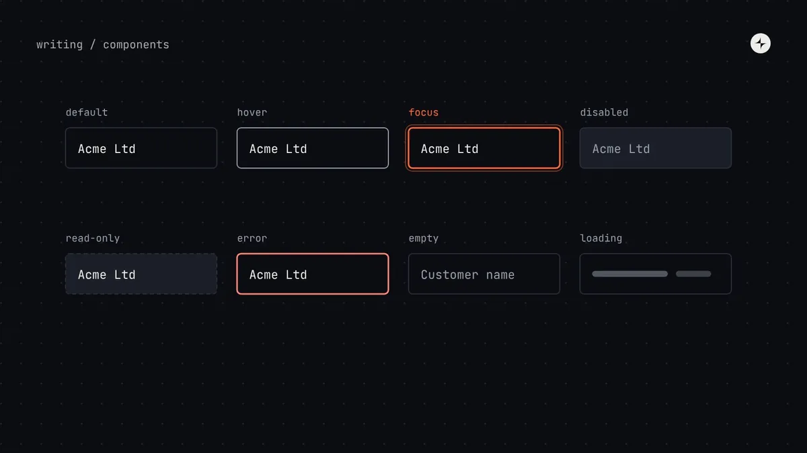
Building a systemComponent states: designing every state before you buildEvery state a design system component needs: interaction, data, content extremes and context, plus combinations and a stress test with real content.6 min read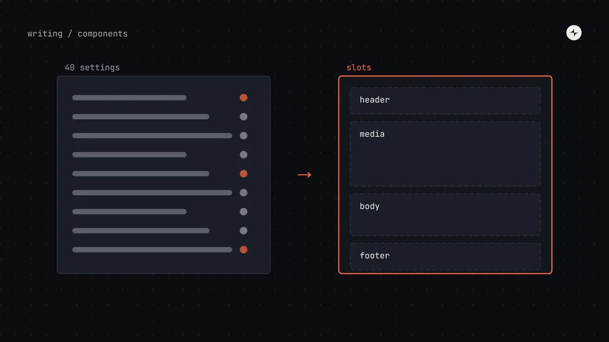
Building a systemComposition vs configurationWhen to give a component settings and when to compose it from parts: slots, compound components, recipes, and the signs a component should be split.5 min read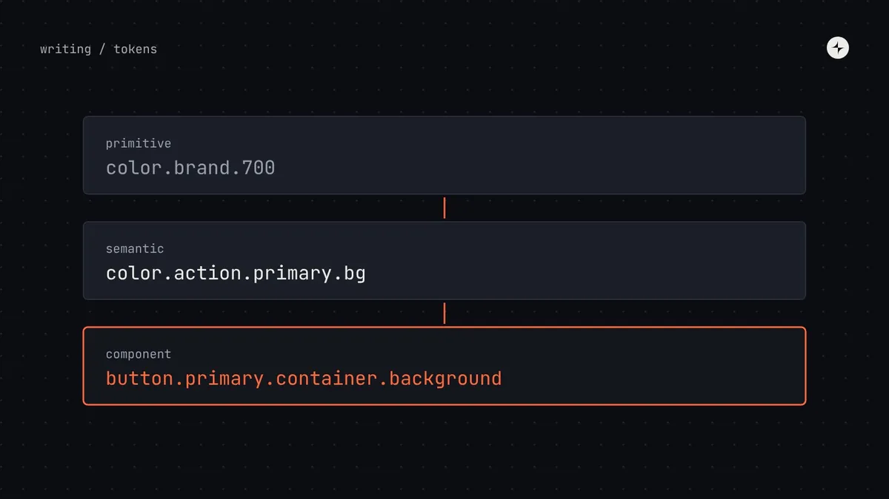
Foundations & tokensComponent tokensWhat component tokens are, when a component deserves its own tokens, how to name them from its anatomy, and how to keep them healthy in Figma and code.5 min read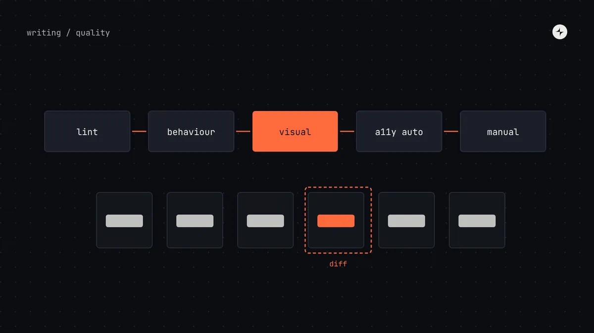
Building a systemTesting a design system: visual, behaviour and accessibilityHow to test design system components: lint rules, behaviour tests, visual regression tests, automated accessibility checks and manual keyboard testing.6 min read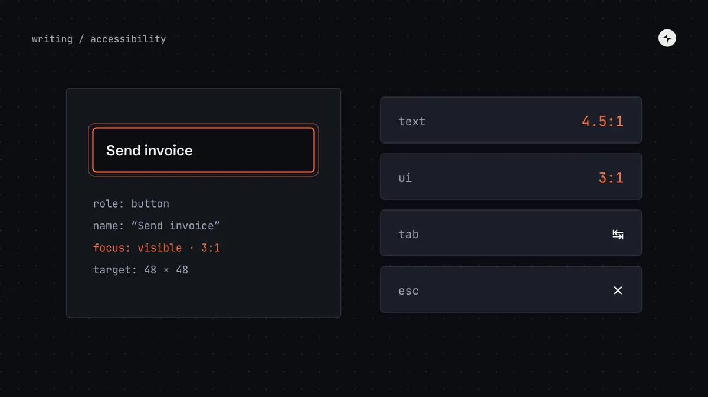
Building a systemAccessibility in a design systemHow to build accessibility into a design system's foundations, components and patterns, and what product teams still own. WCAG 2.2 AA in plain words.5 min read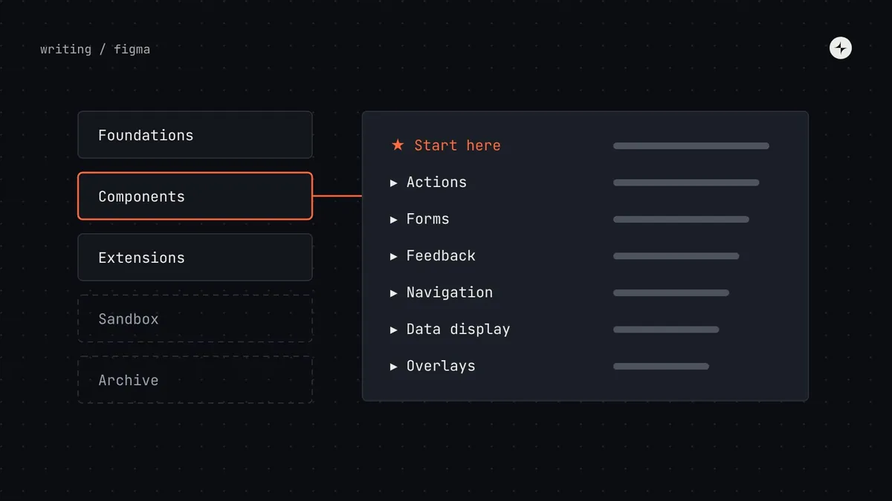
Building a systemHow to organise a Figma design system library people can useHow to structure a Figma design system: separate libraries, pages grouped by job, names that match code, descriptions, life-cycle status and detach data.6 min read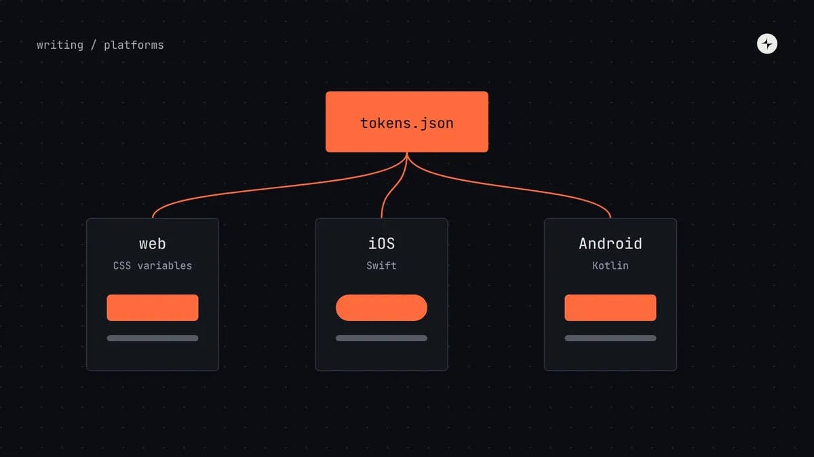
Foundations & tokensCross-platform design systemsHow to run one design system across web, iOS and Android: shared tokens generated for each platform, native components, and what to share or adapt.5 min read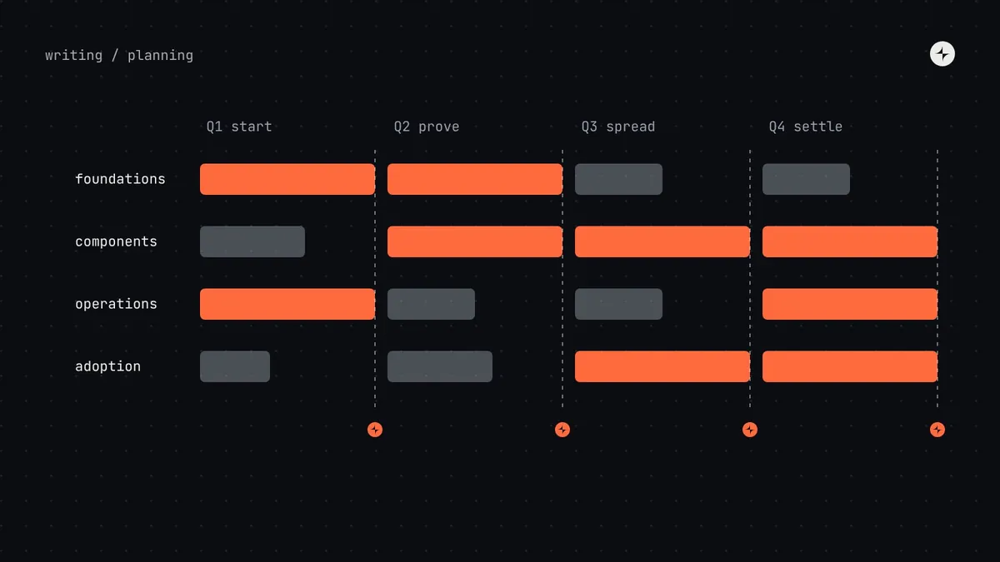
Building a systemA design system roadmap for the first twelve monthsA realistic first-year design system roadmap: four workstreams over four quarters, a gate that earns each next quarter, pilots and the rhythms to start.5 min read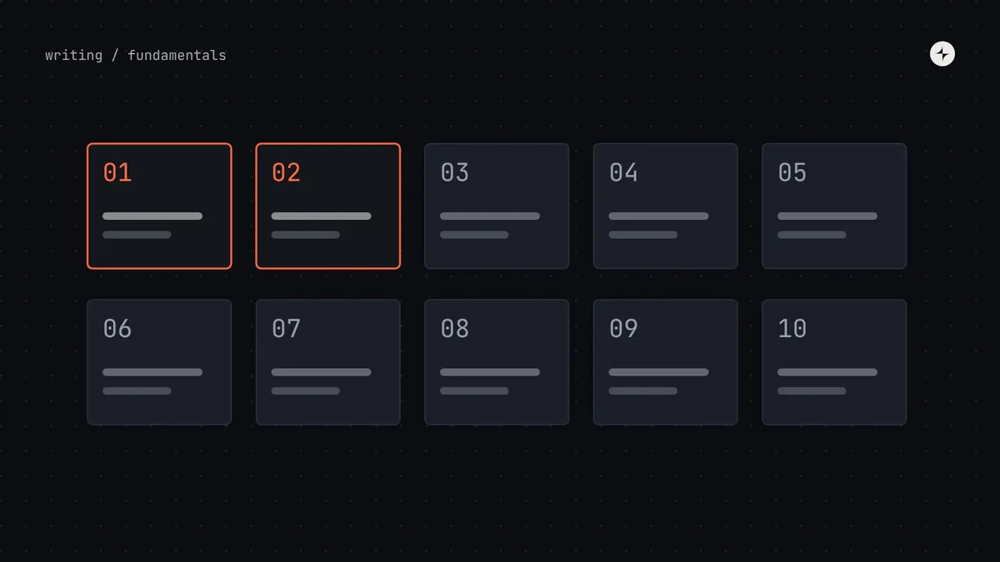
FundamentalsWhy design systems fail: ten failure modes and their antidotesThe ten ways design systems fail, from no engineering commitment to measuring usage instead of value, with the antidote and early warning signs for each.5 min read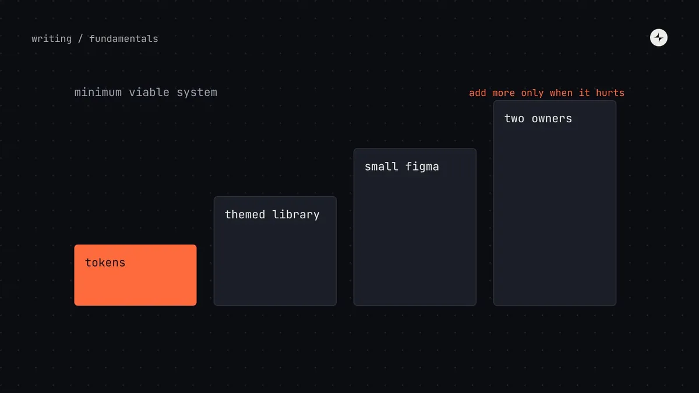
FundamentalsDesign systems for startups: the minimum that pays offWhat a startup actually needs from a design system: tokens in code, a themed component library, a small Figma library, two owners, and when to add more.5 min read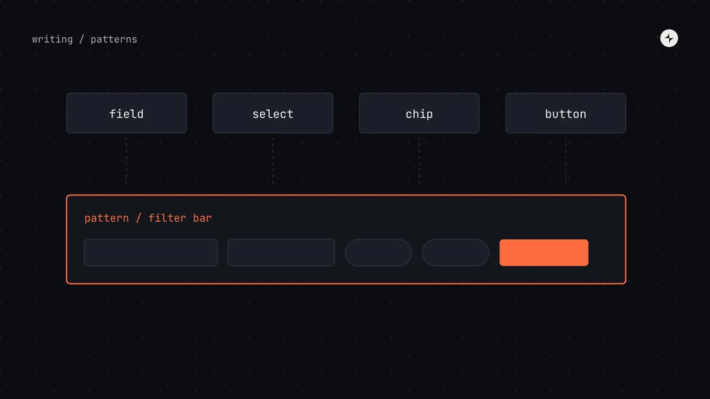
Building a systemDesign system patterns: when components aren't enoughWhat design system patterns are, how they differ from components, the four pattern families to start with, and a template for documenting them.9 min read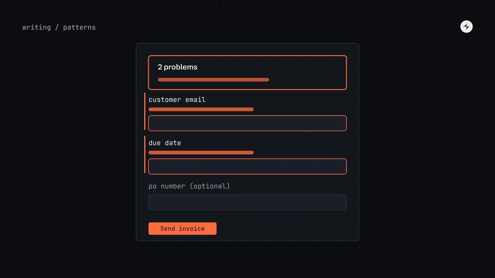
Building a systemForm design patterns: layout, validation and error messagesSeven form decisions a design system should make once: layout, required fields, when to validate, where errors go, what they say, long forms and buttons.7 min read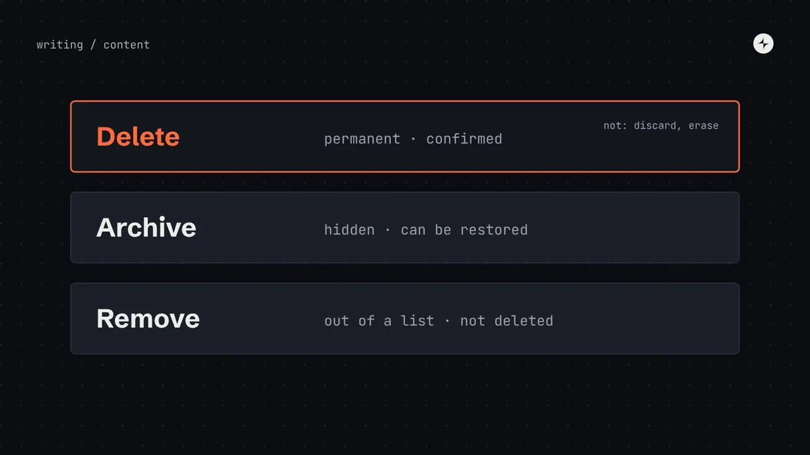
Building a systemContent design in a design systemHow to put words into a design system: voice and tone, a shared vocabulary, formulas for buttons, errors and empty states, and writing for everyone.7 min read Foundations & tokensLayout grids and breakpoints for product UIHow to set up a layout grid for product UI: columns, gutters and margins, choosing breakpoints, named content widths, dashboards and layout tokens.7 min read
Foundations & tokensLayout grids and breakpoints for product UIHow to set up a layout grid for product UI: columns, gutters and margins, choosing breakpoints, named content widths, dashboards and layout tokens.7 min read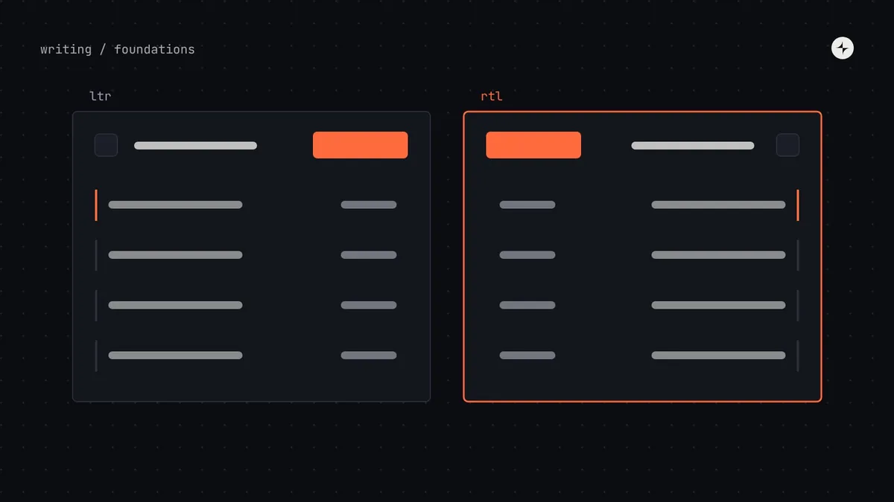
Foundations & tokensLocalisation and right-to-left in a design systemGetting a design system ready for other languages: logical CSS, right-to-left mirroring, text that grows, plurals, locale formats and testing.7 min read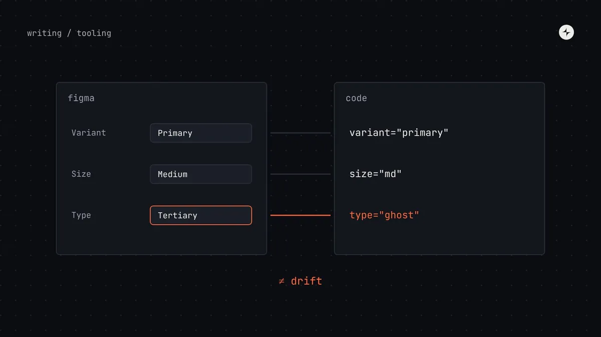
Building a systemKeeping Figma and code in sync: five habits that stop driftHow to stop Figma and code drifting apart: one vocabulary, one token source, a shared definition of done, a monthly twin check and links between them.7 min read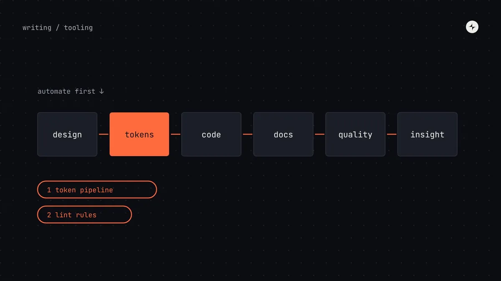
Building a systemDesign system tools by stageThe design system toolchain mapped: design, tokens, code, docs, quality and insight. The minimum tools for each stage, and what to automate first.6 min read GovernanceMigrating legacy products onto a design systemHow to migrate legacy products onto a design system without a big-bang rewrite: tokens first, screens as they're touched, codemods and clear end states.6 min read
GovernanceMigrating legacy products onto a design systemHow to migrate legacy products onto a design system without a big-bang rewrite: tokens first, screens as they're touched, codemods and clear end states.6 min read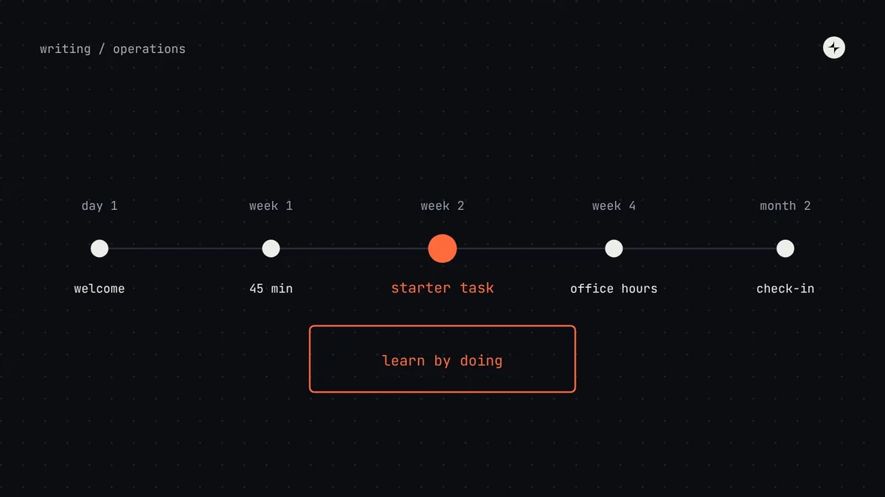
Operating model & teamsDesign system onboarding and training that keeps adoption growingHow to teach a design system continuously: first-week onboarding, a starter task, learning paths by role, training formats and finding knowledge gaps.7 min read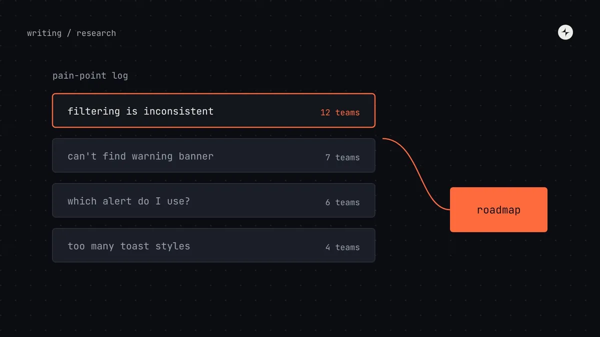
Operating model & teamsDesign system research: how to learn what teams actually needHow to research a design system's users: interviews, observation, a five-minute survey, testing components and docs, and turning findings into a roadmap.7 min read FundamentalsThe design system maturity modelFive stages of design system maturity, how to tell which one you're at, what the next step takes, and why aiming for the top too early backfires.7 min read
FundamentalsThe design system maturity modelFive stages of design system maturity, how to tell which one you're at, what the next step takes, and why aiming for the top too early backfires.7 min read GovernanceDesign system versioningHow to version a design system so updates don't break products: what counts as breaking, visual breaking changes, deprecation and migration.6 min read
GovernanceDesign system versioningHow to version a design system so updates don't break products: what counts as breaking, visual breaking changes, deprecation and migration.6 min read Foundations & tokensDesign token naming conventions: a structure people can guessHow to name design tokens so people can guess them: the parts of a name, primitive, semantic and component patterns, common mistakes and a checklist.5 min read
Foundations & tokensDesign token naming conventions: a structure people can guessHow to name design tokens so people can guess them: the parts of a name, primitive, semantic and component patterns, common mistakes and a checklist.5 min read Foundations & tokensSpacing systems: 4px vs 8px, the scale, and how to use itHow to build a spacing system: choosing a 4px or 8px base, a spacing scale, inset, stack and inline space, density modes and responsive spacing.7 min read
Foundations & tokensSpacing systems: 4px vs 8px, the scale, and how to use itHow to build a spacing system: choosing a 4px or 8px base, a spacing scale, inset, stack and inline space, density modes and responsive spacing.7 min read Foundations & tokensHow to build a type scale for a design systemHow to build a type scale: choosing a base and ratio, line height and letter spacing, naming text styles by role, fluid type and accessibility.6 min read
Foundations & tokensHow to build a type scale for a design systemHow to build a type scale: choosing a base and ratio, line height and letter spacing, naming text styles by role, fluid type and accessibility.6 min read Foundations & tokensColour contrast in design systemsHow to build colour contrast into a design system: WCAG 2.2 ratios, checking pairs not colours, a contrast matrix, pairing rules by step, and APCA.6 min read
Foundations & tokensColour contrast in design systemsHow to build colour contrast into a design system: WCAG 2.2 ratios, checking pairs not colours, a contrast matrix, pairing rules by step, and APCA.6 min read Foundations & tokensMulti-brand design systems: one core, many brandsHow to support several brands, platforms and products from one design system: what to share, what to vary, brand tokens and families of systems.5 min read
Foundations & tokensMulti-brand design systems: one core, many brandsHow to support several brands, platforms and products from one design system: what to share, what to vary, brand tokens and families of systems.5 min read Building a systemWhich components to build first: a prioritisation methodHow to choose your first design system components: count frequency and trouble, plot a 2×2, pick a pilot, and the eight components most teams start with.5 min read
Building a systemWhich components to build first: a prioritisation methodHow to choose your first design system components: count frequency and trouble, plot a 2×2, pick a pilot, and the eight components most teams start with.5 min read Building a systemBuild, borrow or buyShould you build design system components, use a headless library or theme a styled one? Trade-offs, a decision table and what we usually recommend.5 min read
Building a systemBuild, borrow or buyShould you build design system components, use a headless library or theme a styled one? Trade-offs, a decision table and what we usually recommend.5 min read Building a systemComponent complexity: how to estimate design system workA scoring method for design system components: four levels of complexity, an eight-question rubric, and how complexity changes process and effort.6 min read
Building a systemComponent complexity: how to estimate design system workA scoring method for design system components: four levels of complexity, an eight-question rubric, and how complexity changes process and effort.6 min read Building a systemComponent props best practices: designing APIs people can useHow to design component props: the eight kinds of props, rules for good APIs, controlled vs uncontrolled, and keeping props in step between Figma and code.6 min read
Building a systemComponent props best practices: designing APIs people can useHow to design component props: the eight kinds of props, rules for good APIs, controlled vs uncontrolled, and keeping props in step between Figma and code.6 min read Operating model & teamsHow to run design system office hours people actually useHow to run design system office hours: format, hosts, outputs, timing across time zones, and what to do when nobody turns up.5 min read
Operating model & teamsHow to run design system office hours people actually useHow to run design system office hours: format, hosts, outputs, timing across time zones, and what to do when nobody turns up.5 min read Operating model & teamsDesign system release notes and announcementsHow to announce design system changes: channels, timing, and copyable templates for releases, breaking changes, deprecations, token updates and digests.6 min read
Operating model & teamsDesign system release notes and announcementsHow to announce design system changes: channels, timing, and copyable templates for releases, breaking changes, deprecations, token updates and digests.6 min read Operating model & teamsDesign system championsHow to run a design system champions programme and community: what champions do, time and recognition, community sessions and working groups.5 min read
Operating model & teamsDesign system championsHow to run a design system champions programme and community: what champions do, time and recognition, community sessions and working groups.5 min read Building a systemAI in design systemsWhere AI genuinely helps design system teams today (docs, release notes, checks, migrations) and the cautions that matter when mistakes spread to every product.5 min read
Building a systemAI in design systemsWhere AI genuinely helps design system teams today (docs, release notes, checks, migrations) and the cautions that matter when mistakes spread to every product.5 min read FundamentalsDesign system vs style guide vs component library vs UI kitFour terms people use interchangeably, and what each actually includes. A comparison table, a diagram of how they nest, and how to tell which one you have.8 min read
FundamentalsDesign system vs style guide vs component library vs UI kitFour terms people use interchangeably, and what each actually includes. A comparison table, a diagram of how they nest, and how to tell which one you have.8 min read FundamentalsDo you need a design system? A decision guide for startups and growing teamsSeven questions, five maturity stages and the signs you've outgrown a UI kit. A practical way to decide whether your team needs a design system yet.11 min read
FundamentalsDo you need a design system? A decision guide for startups and growing teamsSeven questions, five maturity stages and the signs you've outgrown a UI kit. A practical way to decide whether your team needs a design system yet.11 min read Building a systemHow to build a design systemAudit, foundations, tokens, first components, docs and governance, in order. A staged 12-month plan with gates, so you invest only as fast as it pays off.11 min read · Guide
Building a systemHow to build a design systemAudit, foundations, tokens, first components, docs and governance, in order. A staged 12-month plan with gates, so you invest only as fast as it pays off.11 min read · Guide Building a systemHow to run a design system audit (with an interface inventory method)Screenshot, group, count and prioritise every button, field and colour in your product. A step-by-step UI audit that ends in a ranked plan, not a slide.8 min read
Building a systemHow to run a design system audit (with an interface inventory method)Screenshot, group, count and prioritise every button, field and colour in your product. A step-by-step UI audit that ends in a ranked plan, not a slide.8 min read Foundations & tokensDark mode with design tokensBuild dark mode by swapping semantic tokens, not redesigning screens. A worked example with checked contrast ratios, naming rules and the common traps.8 min read
Foundations & tokensDark mode with design tokensBuild dark mode by swapping semantic tokens, not redesigning screens. A worked example with checked contrast ratios, naming rules and the common traps.8 min read Foundations & tokensHow to build an accessible colour palette in OKLCHWhy OKLCH beats HSL for UI colour, and how to build even, accessible ramps step by step. With a computed palette and contrast numbers you can check.10 min read
Foundations & tokensHow to build an accessible colour palette in OKLCHWhy OKLCH beats HSL for UI colour, and how to build even, accessible ramps step by step. With a computed palette and contrast numbers you can check.10 min read GovernanceDesign system governance: who decides what, and howGovernance without bureaucracy: decision rights, a lightweight review process, escalation paths and a decision log. How it should change as you grow.9 min read · Guide
GovernanceDesign system governance: who decides what, and howGovernance without bureaucracy: decision rights, a lightweight review process, escalation paths and a decision log. How it should change as you grow.9 min read · Guide Operating model & teamsDesign system team structureWho you need on a design system team, at what company size, and where they report. Org charts, a role table and the signs it's time to grow the team.8 min read
Operating model & teamsDesign system team structureWho you need on a design system team, at what company size, and where they report. Org charts, a role table and the signs it's time to grow the team.8 min read GovernanceDesign system contribution modelA contribution model that scales: one front door, a request form, a scoring formula for priorities, contribution levels and the review flow.8 min read
GovernanceDesign system contribution modelA contribution model that scales: one front door, a request form, a scoring formula for priorities, contribution levels and the review flow.8 min read Building a systemDesign system documentationWhat people actually read in design system docs, the sections every component page needs and how to structure the portal. A page template to copy.8 min read
Building a systemDesign system documentationWhat people actually read in design system docs, the sections every component page needs and how to structure the portal. A page template to copy.8 min read Business case & measurementHow to measure design system successWhich design system metrics to track at each stage: adoption, coverage, detach rate, satisfaction, time saved. With a dashboard layout and survey questions.7 min read
Business case & measurementHow to measure design system successWhich design system metrics to track at each stage: adoption, coverage, detach rate, satisfaction, time saved. With a dashboard layout and survey questions.7 min read Business case & measurementDesign system ROIWhat a design system really costs, where savings come from and when it pays back. A transparent model with break-even by team size and its limits.9 min read
Business case & measurementDesign system ROIWhat a design system really costs, where savings come from and when it pays back. A transparent model with break-even by team size and its limits.9 min read Operating model & teamsMost design system leads are just librariansWhy maintaining a library isn't the same as leading a design system, and what leading one actually involves.3 min read
Operating model & teamsMost design system leads are just librariansWhy maintaining a library isn't the same as leading a design system, and what leading one actually involves.3 min read Operating model & teamsDesign systems as operational backbones5 min read · on Medium ↗
Operating model & teamsDesign systems as operational backbones5 min read · on Medium ↗ FundamentalsMost design systems are just expensive UI libraries8 min read · on Medium ↗
FundamentalsMost design systems are just expensive UI libraries8 min read · on Medium ↗ Foundations & tokensFoundations of modern design systems5 min read · on Medium ↗
Foundations & tokensFoundations of modern design systems5 min read · on Medium ↗Design Systems 101
The basics, for anyone new to design systems.
- 1What is a design system?13 min
- 2Design system vs style guide vs component library vs UI kit8 min
- 3Do you need a design system?11 min
- 4The design system maturity model7 min
Building one
From the first audit to a documented system people can use.
- 1How to build a design system11 min
- 2How to run a design system audit8 min
- 3Design system documentation8 min
Tokens in practice
Tokens, colour and themes, with real values you can check.
- 1Design tokens10 min
- 2Design token naming conventions5 min
- 3How to build an accessible colour palette in OKLCH10 min
- 4Dark mode with design tokens8 min
- 5Multi-brand design systems5 min
- 6Cross-platform design systems5 min
Foundations in depth
Spacing, type, contrast and layout: the decisions every screen inherits.
- 1Spacing systems7 min
- 2How to build a type scale for a design system6 min
- 3Colour contrast in design systems6 min
- 4Layout grids and breakpoints for product UI7 min
Components in depth
Choosing, scoping and shaping the components teams build with.
- 1Which components to build first5 min
- 2Build, borrow or buy5 min
- 3Component complexity6 min
- 4Component props best practices6 min
The operating model
How design systems are run after launch: teams, decisions and requests.
- 1The design system operating model10 min
- 2Design system team structure8 min
- 3Design system governance9 min
- 4Design system contribution model8 min
Running it day to day
The rituals that keep a system trusted: help, releases, change and community.
- 1How to run design system office hours people actually use5 min
- 2Design system release notes and announcements6 min
- 3Design system versioning6 min
- 4Design system champions5 min
Patterns and content
How components combine, what the words say, and getting ready for other languages.
- 1Design system patterns9 min
- 2Form design patterns7 min
- 3Content design in a design system7 min
- 4Localisation and right-to-left in a design system7 min
Tools and twins
Keeping Figma and code identical, the toolchain behind them, and where AI helps.
- 1Keeping Figma and code in sync7 min
- 2How to organise a Figma design system library people can use6 min
- 3Design system tools by stage6 min
- 4AI in design systems5 min
Growing adoption
Teaching the system, listening to the people who use it, and bringing older products along.
- 1Design system onboarding and training that keeps adoption growing7 min
- 2Design system research7 min
- 3Migrating legacy products onto a design system6 min
Building components well
States, composition, tokens, testing and accessibility: what makes a component last.
- 1Component states6 min
- 2Composition vs configuration5 min
- 3Component tokens5 min
- 4Testing a design system6 min
- 5Accessibility in a design system5 min
Planning the system
What to do at your size, a first-year plan, and the mistakes to avoid.
- 1Design systems for startups5 min
- 2A design system roadmap for the first twelve months5 min
- 3Why design systems fail5 min
Proving value
Metrics and money: how to show a design system is working.